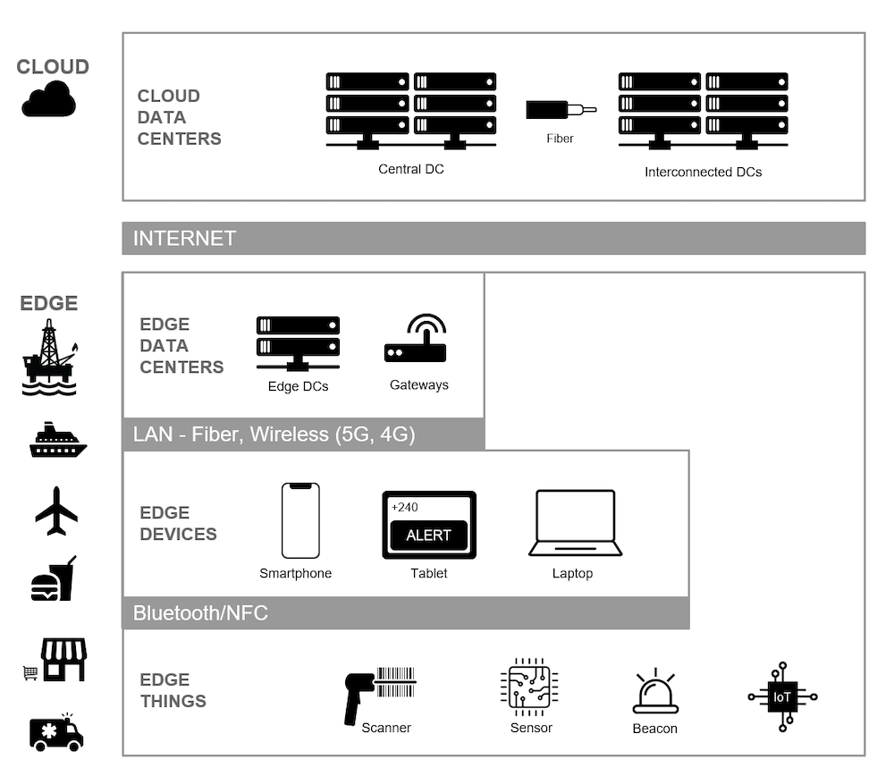

Visualizing an Edge Computing Architecture
Edge computing moves data processing and storage closer to applications and client devices by leveraging tiered,
edge data centers – along with embedded data storage directly on devices where appropriate.
This tiered approach insulates applications from central and regional data center outages.
Each tier leverages increasingly local connectivity – which is more reliable – and synchronizes data within and
across tiers as connectivity permits. Edge computing is how you power always-fast, always-on applications.
I like to visualize edge architectures as a set of layers, which makes the concept easier to understand. Take a look at the diagram
below:

In the diagram above, the top layer represents cloud data centers, comprised of a central data center and interconnected regional data centers.
The cloud data centers still serve a crucial role in an edge computing architecture because they’re the final repository of information. However,
cloud data centers aren’t relied upon for local applications.
The next layer down is the edge layer. The edge could be an oil platform, as in our earlier example, but it could just as easily be a cruise liner,
airplane, restaurant, retail shop or mobile medical clinic. The edge layer contains edge data centers and Internet of Things (IoT) gateways.
These run on a local area network, which could be fiber, wireless, 5G or older networks such as 4G and earlier.
Within the edge layer, you see individual devices, smart phones, tablets and laptops carried by users, as well as IoT devices that all communicate
with the edge data center. There is also communication between devices via a private area network such as RF or Bluetooth.
While this depiction shows a single edge data center for simplicity, there could be n number of additional edge data centers to facilitate computing
across a business ecosystem. For example, you might power POS systems for a chain of retail stores using edge data centers in each city where stores
are concentrated.